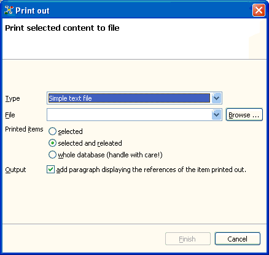
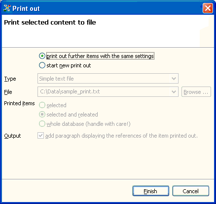

Printing the item's content means writing the content to a text file for that you can process it further using a text processor. By default, the content of the selected items is written to a simple text file. Additionally, Relations comes with a second plugin that allows you to print out the content to an OpenOffice writer document. OpenOffice is free software you can download from http://www.openoffice.org/. However, you can view OpenOffice writer documents using newer versions of MS Office Word too.
Initialize the print out
To start printing out select an item in the Relations browser
and press Ctrl+P.
A dialog window is displayed where you can enter the name of the file
to which the item's content shall be written to. You can select the
scope
of items whose content will be printed out. The minimal scope is the
selected item's content only. The middle scope is to print out the
content of the selected item and all items related with the selected
one. The last option is to print out the whole database. This option,
however, is recommended only for small databases (up to 100 items)
because of the time needed for the print out.
The format of the content printed out is dependent on the item type. Each item is printed as section. The section title is the item's title. In case of term items, it's simply the text that makes up the section body. For person items, the section body is made of the person's year of birth and death if indicated and the text. In case of text items, the section body is formatted according the selected bibliography style.
You can add an additional section containing the items the respective item is related to by checking the Output check box.
Clicking the Finish button will start the print out. If the task has finished, you can select another item and iterate the print out step, thus adding further item content to the document created in the first step.

Add further item by iterating the print out action
You do not have to bother about duplicates. The print out manager will remember the items written to the selected document and will print out the content of further items only if they have not printed out yet.
Example:
You want to print out four items A, B, C and D where B is related with
A and C whereas C is related with B and D: A - B - C - D.
You can print out the items A, B and C if you select B in the Relations
browser and initialize the print out with scope selected and related.
Then, select item C and add another print out step with the same
settings. This will add exactly the missing item D to the print out
document.
Note: It is possible to extend the application by providing additional print out types, i.e. document types the item content shall be written to. This can be done by providing a plug-in implementing the org.elbe.relations.printOut extension point.